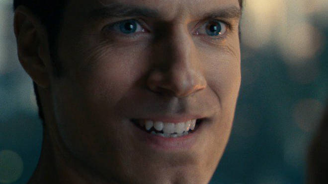
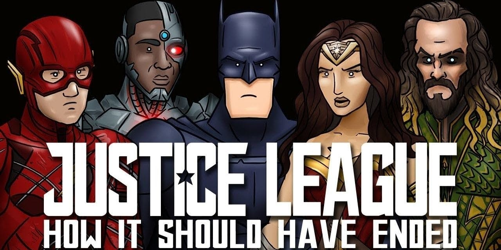

The Insane Differences Between Infinity War And Justice League
So similar, yet so different
2 May 2018, 17:15

Justice League and Infinity War - two giant, superhero team-up movies from the world's two most famous comic book companies. They both feature heroes uniting to punch a man with a CGI face, armies of anonymous alien creatures and people travelling around in tubes of light, but despite their similarities, these films are dramatically different in terms of how they were made and how they were received.
While it's certainly fashionable at the moment to rag on the DC movies - mainly due to a number of them being not good - we can't ignore the fact that there are some gems in the bunch... well, one gem in the bunch. Wonder Woman is great. Batman v Superman had that one good Batman fight, Suicide Squad..... okay moving on.
Infinity War, meanwhile, is receiving both glowing reviews and large, large, very large piles of cash.

So how exactly did this happen? Let's take a look at how these two movies took such different paths:
`Battle Of The Budgets
Both films cost around $300 million to make, but the respective budgets were spent in very different ways.
Marvel spent their coins on rendering massive planets and paying their approximately 5,000 leading actors. DC, meanwhile, spent their cash on constantly re-shooting almost the entire film, as they grappled with issues with both the script and the direction. Shockingly, losing your director halfway through production and then bringing in a new one to reshoot half the film in an entirely different tone is a really expensive thing to do.
These last-minute reshoots also took a toll on the CGI artists, who had to turn around their computer effects in a waaay shorter time frame than usual, leading to a bizarre situation where one of the most expensive films ever made often looks shockingly rubbish.
Henry Cavill's awful CG moustache removal is the clearest example of this - the effects specialists have said they could have actually perfectly digitally removed it, if they'd had a couple more months to work on it. They had the technology, but they didn't have the time.
To be clear: I am a huge DC fan; I love these characters. But being a fan does not mean you simply ignore problems when they appear.
`Battle of the box office

Money isn't the ultimate way of determining whether a movie is 'good' or a 'success'. But when you are a giant, international media company like Marvel or DC, money is the ultimate way of determining whether a movie is 'good' or a 'success'.
Case in point: Justice League, which made $657.9 million on its $300 million budget, was considered a big failure by its producers. And to be honest, they sort of have a point: The Dark Knight, which featured only one superhero, made a cool $1 billion at the box office - AND it did so on a budget of only ('only') $185 million.
Heck, Wonder Woman's solo film, the very first proper cinematic outing of that character, even managed to make more than Justice League (a film that Wonder Woman was also in) - taking an extremely tasty $821.9 million home at the box office.
On the other side of the aisle, Infinity War also made $657.9 million. The only difference is that it did it in four days. That's right, in less than a week, Infinity War has managed to make more money than Justice League made in its entire run in cinemas. For those who are less mathematical among you, business analysts refer to a situation like that as 'not good'.
`Meet the crew
An oft-cited criticism of DC is that they rushed to catch up with the MCU and so didn't do the required groundwork to properly establish their characters. This comes into sharp relief when comparing Justice League to Infinity. While the later film has more characters than you can shake an Infinity Gauntlet at, the audience already knew who they all were - or at the very least, was given a gist of what they're about.
In Justice League, by contrast, three of your main League members: Cyborg, The Flash and Aquaman had never been properly seen before this film (bar some very brief cameos) and a character that had actually been well-established - a certain Mr Superman, was kept out of the first half of the film (spoiler alert I guess but, come on, the dude is literally on the posters). This meant the film had to grapple with setting up a story while also introducing three whole protagonists, checking in with two other protagonists and then later re-establishing a protagonist. The end result is that by the end, aside from literally nothing notable happening (it is perhaps the most linear film I have ever seen), we also don't even really know who these heroes are, or why we should really care about them. Who is Cyborg? Justice League doesn't seem to know.
So we end up with another strange situation where a film with 95 main characters is more tidy than one with six.